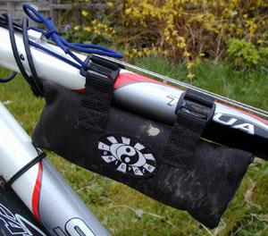

The first thing you notice you when you pull a set of Lumicycle lights out of the box is how small and light the lamps are. You'd seen the pictures, but you never realized they were that small. The battery is similarly small and light, especially to those of us who cut our teeth on lead-acid batteries. Even in comparison to NiCads, they are quite compact (at least they are if you get the frame mount pack; the water bottle version is constrained by the need to be water-bottle shaped).

Your first night ride with Lumicycles is a revelation. The light is bright, and the beam pattern is superb: a perfectly smooth round pattern with no rings or stripes. The runtimes are about the longest you'll get with high-powered lighting systems. At first you're dead impressed. However, soon you take it for granted, and you begin to wonder how you managed to ride with the pathetic lights you had before. You begin to wonder: can this last? Will the Lumicycles keep it up, continuing to perform so flawlessly, or will extended use bring out subtle flaws?
We've had the Lumicycles a couple of years now. We've ridden in cold, wet, and mud. We did uncover a few flaws, but nothing that can't be fixed by blu-tac and sticky tape. The system as a whole works well.
The lamps resist water and mud well and haven't even gotten scratched, despite a few crashes. The mounting system, consisting of reusable zip ties, seems cheap at first but in fact it's hard to beat. The zip ties go on and off very quickly. Once in place the lights don't jiggle, but they are loose enough that you can adjust the vertical alignment of the beam on the fly. If you crash the lamps are well protected, first because they are very close to the bars to begin with, and secondly, if they are hit they will twist around the bars rather than breaking. Horizontal adjustment needs a screwdriver, but since many systems don't let you adjust horizontal angle at all, this is not a real problem. We haven't had a lamp burn out yet, but if we did it would be easy to change, as the front of the lamp simply unscrews. This allows you to change bulbs quickly and easily so you can match up burn times with expected riding times to give max illumination.
The toggle switch on the back of the lamps looks basic but works well. It's easy to find and operate even with thick gloves on. However since they are so easy to turn on and off, it's not a good idea to leave the battery connected to the lighting heads if you're not using the lights. One of our crew did this when he drove to a night-time Trailquest, resulting in a drained battery and no lights.
The only real problem with the lighting heads is the lack of a rubber seal on the power socket. This isn't needed to keep the water out, but to keep the power plug in: the seals found on many other lighting systems provide enough additional friction to keep the plugs from jiggling out. This happens occasionally with the Lumicycles, but is easily prevented by slinging some rubber bands around the plugs.
We've found that the standard setup of 12W spot and 20W flood to be adequate most of the time. However, a 12W spot and 20W spot seem to be an even better choice: use 12W on road, 20W off road and both down hills. The standard 20W flood puts huge amounts of light close in (and up in the air - great for lighting up the tree canopy!) but not enough in the middle distance. With the 20W spot you get enough escaping light to light up the terrain immediately in front of you and much better mid and long distance light.
If you're coming up to a sharp bend or a ditch the handlebar-mounted lighting doesn't allow you to see where you're going. A helmet light is very useful in these situations. Since it's mounted on your head it moves to follow what you're looking at, and since it's higher up it lets you see into ditches and holes sooner. Lumicycle offer a helmet attachment, a mount attached to a neoprene strap that goes around the helmet. It's a bit of a faff getting the strap to stay on. With the strap over top of the visor the light wasn't quite so securely fixed, so we ended up threading it through the visor. It's still the best fixing system we've seen though.
It's best to use a spot bulb on the helmet since you can point the light right where you want. With the 20W spot set up we use lighting is superb - full vision all round, but you have to be very careful not to blind people! A 12W spot is the choice for maximum run time. The only drawback of a helmet light is that in fog or drizzle it lights up the air right in front of you, making it difficult to see anything, especially with the higher power bulbs.
The battery has continued to provide the same long runtimes it did when new. Perhaps this is due to the smart charger that we got with the system. This charger refills the battery quickly, predictably, and without guesswork. Since NiMH batteries are prone to damage by over charging, it is great that Lumicycle offer an inexpensive upgrade to a smart charger.
The only complaint we have about the frame battery is that if you have a sloped top tube (and how many of us don't?) the battery slides down it. You need to anchor it in place somehow. Depending on where your cable stops are, you may be able to put the front strap in front of the cable stops, under the cable housing. One method is a bit of shoelace between the battery strap and the cable housing in front of the stops. An alternative is to get the water bottle battery.
Even the best products sometimes go wrong. One of us had problems with the smart charger: it would terminate charging prematurely. Another had a faulty connection in a lamp. In each case, we phoned up Lumicycle and were instructed to send back the faulty item. We did, and soon a replacement appeared on our doorstep. This after sales service is second to none.
In summary, Lumicycle lights are bright, small, light, and very well designed. The few minor niggles are easily correctable with a bit of creative thinking, and any defects are fixed or replaced quickly and without hassle. Lumicycles offer superb value for money in a high-end lighting system. They are much better than anything else on the market at a comparable price and the equal of many systems costing twice as much. They're even made in England!
Rating 9/10.